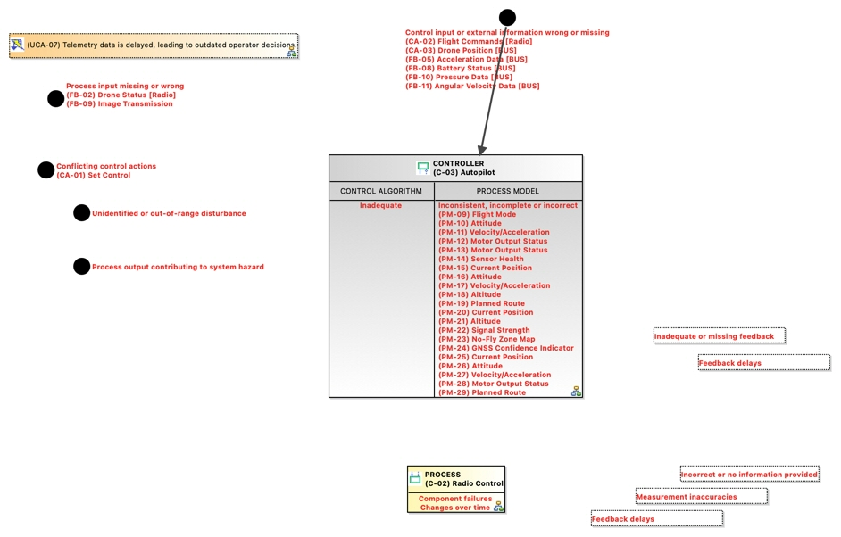

(UCA-07) Telemetry data is delayed, leading to outdated operator decisions.
UnsafeControlAction
GCAP_NTP241_UNINA > GCAP_NTP241_UNINA > STPA Analysis > Control Structure > (C-02) Radio Control > Feedback: (C-03) Autopilot -> (C-02) Radio Control > (FB-02) Drone Status [Radio] > (UCA-07) Telemetry data is delayed, leading to outdated operator decisions.No description.
Content
Control Action
Violated Constraints
 (SC-01) The drone shall initiate controlled emergency procedures upon detection of flight instability.
(SC-01) The drone shall initiate controlled emergency procedures upon detection of flight instability.- (SC-04) The autopilot shall prevent climb commands exceeding the altitude ceiling.
Hazards
Owned diagrams
CFD Causal Factor Diagram of UCA07 Telemetry data is delayed leading to outdated operator decisions
